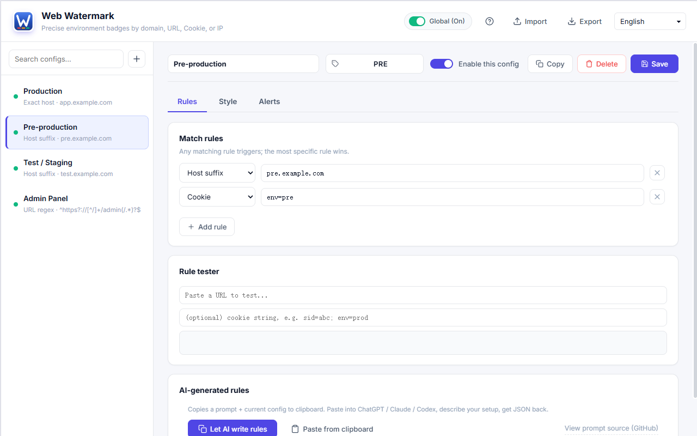
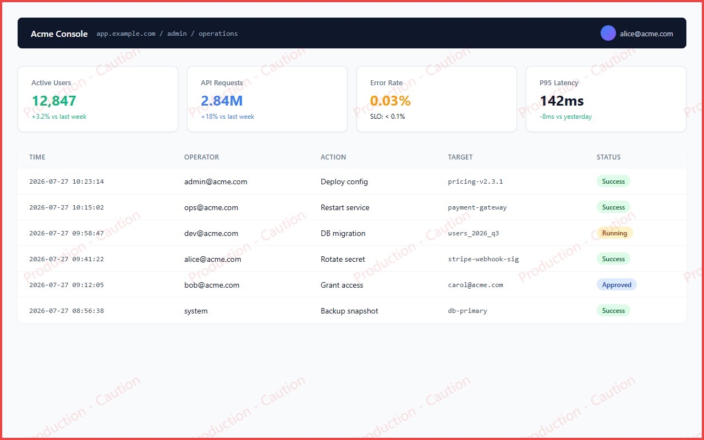
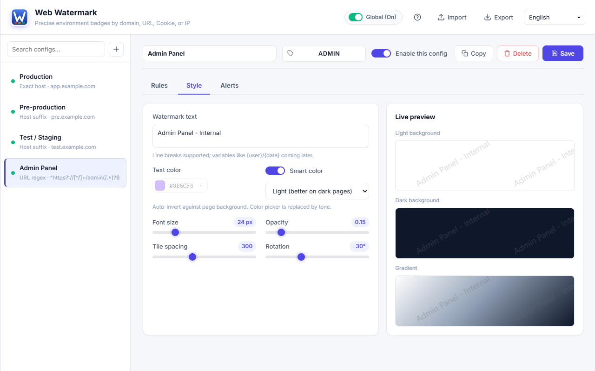

§ environment indicator for chrome
Web Watermark Tool marks matching pages with a tiled indicator, a viewport border, and a toolbar badge — so production never gets mistaken for test. Rules match on domain, URL, IP range, or cookie.
Free · No account · 1 permission · No tracking
Production · real customer data
Test · throwaway data
A thick inset border on the viewport edge catches peripheral vision, which is why production deserves one.
Move your pointer over a window above to see it. In the real extension the triggers are pointer movement, typing, scrolling, and touch drag — never clicking. Typing cannot be demonstrated here because these panes never take keyboard focus.
§ the problem
Test and production usually look identical — same layout, same buttons, often the same data shape. Browsers give you nothing to tell them apart. These three situations cause the most damage, and none of them can be solved by reading the tab title.
test.app.example.com and app.example.com are nearly indistinguishable in a tab. One misplaced click runs your test script against live data.
An admin panel at https://192.0.2.5/ offers no visual clue about what you are connected to. There is no domain name to read at all.
The backend routes on a cookie such as deploy=canary. Same host, same path, entirely different environment — and nothing on screen says so.
§ matching
A configuration fires when any of its rules match. When several match at once, the highest-scoring rule wins — and within a type, a longer and more specific value outscores a shorter one. That means an exact host always beats a broad suffix, so you can define a company-wide default and override it per host.
| Type | Matches | Example | Score |
|---|---|---|---|
host-exact | Hostname equals the value exactly | app.example.com | 1000 + len |
ip-exact | Hostname is exactly this IP | 192.0.2.5 | 900 |
ip-cidr | Hostname is an IPv4 in this subnet | 10.0.0.0/8 | 800 |
url-regex | Full URL against a regular expression | ^https?://.*/admin(/.*)?$ | 700 + len |
cookie | Cookie name, exact value, or contains | deploy=canary | 650 / 600 / 550 |
host-suffix | Hostname and all its subdomains | example.com | 500 + len |
§ readability
An indicator that vanishes against certain backgrounds is worse than none, because you learn to trust it and then it fails silently. Smart contrast mode inverts the indicator against whatever sits behind it using mix-blend-mode: difference, so one setting covers light pages, dark dashboards, and gradients.
Switch the tone to see the fill change between #d1d5db and #1f2937 — the same two values the extension uses.
§ the rest of it
A short label such as PROD or TEST sits on the extension icon, so you can check the environment without looking at the page at all. Labels are cut to four units, counting CJK characters as two.
Paste a URL and an optional cookie string, and see which rule would match before you save. It refuses to run patterns that look catastrophic, so a bad regex cannot freeze your pages.
One toggle suspends every indicator without deleting a single rule — useful for screenshots, screen shares, and demos. Flip it back and all your configurations return untouched.
Export your configurations to a file and let teammates import it, so a whole team marks the same environments the same way. The same export moves your setup between machines.
§ privacy
The extension requests exactly one Chrome permission: storage. It has no host permissions, no tabs, no activeTab, and no scripting. Cookie rules are evaluated by reading document.cookie in the page itself, which is why the cookies permission is not needed either.
chrome.storage.sync, readable by nobody else§ questions
An environment indicator is a visual marker a browser extension draws on a page to show which deployment you are looking at — production, staging, test, or a canary release. Here it takes three forms at once: a tiled text watermark, a coloured border around the viewport, and a short badge on the toolbar icon.
Yes — every feature is free, with no account, no sign-in, and no in-app purchases. There is no paid tier of any kind.
Yes. Use a cookie rule when the backend distinguishes environments by cookie, or a url-regex rule when they differ by path. Both work on hosts that are otherwise identical, which is the usual situation for canary deployments.
Yes. Use ip-exact for a single address such as 192.0.2.5, or ip-cidr to cover a whole subnet such as 10.0.0.0/8. This is the usual case for VPN-only internal tools that have no domain name.
No. The extension requests only the storage permission and contains no analytics or telemetry code. Nothing about your browsing leaves your machine.
Export your configurations to JSON and let teammates import the file. The same export also moves your setup between machines.
Five: English, Simplified Chinese, Traditional Chinese, Japanese, and Spanish. It follows your browser language and can be switched at any time.
§ the real thing
Everything above this line is a live reproduction running the extension's own drawing code in your browser. These are ordinary screenshots of the installed extension, included as proof that the reproduction is faithful.

Screenshot — the options page, with the rule list and live preview.

Screenshot — a production page with the indicator and border active.

Screenshot — smart contrast holding up across three backgrounds.